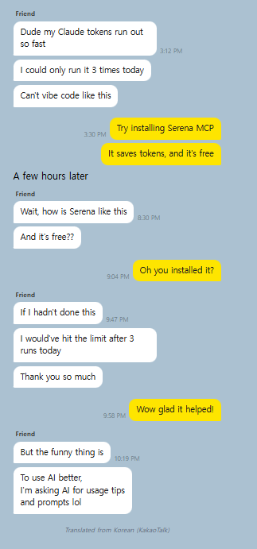
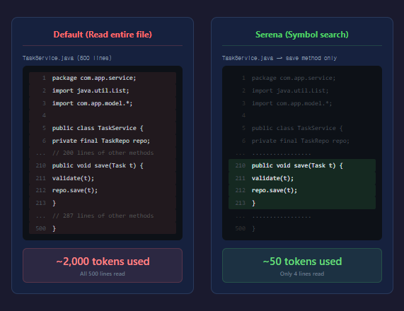
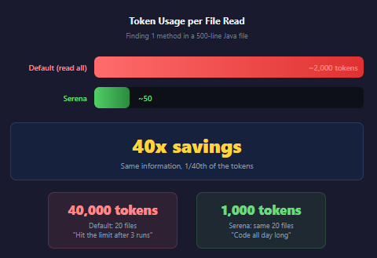
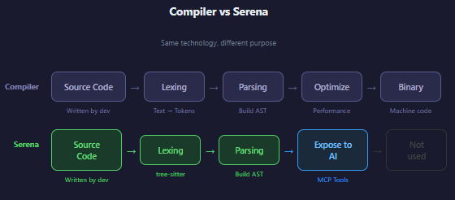

How Serena Saves 40x on Tokens — The Compiler Theory Behind Your Vibe Coding
Introduction

When you ask an AI "find every place this method is called," what's actually happening under the hood?
I'd been using Serena MCP for vibe coding — installed it, connected it, it worked, so I just used it. Then one day it stopped connecting, and while digging through the problem I discovered that this tool is built on core concepts from compiler theory.
This isn't a guide to installing or using Serena. It's an explanation of "what this thing is actually doing internally" — written so that even non-CS people can follow along.
Background: How Does AI Read Code?
When you ask an AI "find this function," how does it actually find it? The simplest approach is just like Ctrl+F — open the file and search for text.
grep -r "findById" ./srcThis finds every line containing the string "findById." Simple and intuitive. But there's a problem.
The Limits of Text Search
Imagine searching a library for every book that mentions the word "run." The Ctrl+F approach means flipping through every page of every book looking for those three letters. You'd end up with hits like:
- "run the server" (what you wanted)
- "running shoes review" (not quite...)
- "runtime error" (also not what you meant)
The same thing happens in code:
Search results for "findById":
✅ taskRepository.findById(id) ← this is what you wanted
❌ findByIdResult = ... ← a variable name that matches
❌ // findById is deprecated ← a comment that matches
❌ "findById" ← a string literal that matchesAnd there's an even bigger problem: token consumption.
Why Do Tokens Run Out?
AI coding tools like Claude and Cursor have something called a "context window." Think of it as the AI's short-term memory capacity. As the AI reads code, it fills up this memory, and once it's full, it can't read any more.
With text search, even if you say "I just want to see the save method," the AI still has to read the entire file. To find a 5-line method in a 500-line file, it loads all 500 lines into memory.
To find a 5-line method in a 500-line file:
→ Reads all 500 lines
→ Consumes ~2,000 tokens
→ Read just 10 files like this: 20,000 tokens
→ Tokens drain fastIn the chat above, my friend's comment about "probably ran out after 3 turns" is exactly this problem. Every time the AI reads code, tokens get consumed, and once they're gone, the conversation is over.
What Serena Does Differently: Reading Code as Structure
Let's go back to the library analogy.

Text search (grep) is flipping through every page of every book. Serena, on the other hand, is looking at the table of contents and the index.
If you ask a librarian "find me something about apples," a good librarian doesn't start reading every book from page one. They check the table of contents, find "Chapter 3: Fruits → 3.2 Apples," and open directly to that page. That's what Serena does.
The technology that makes this possible is AST (Abstract Syntax Tree) and tree-sitter.
AST: Building a Table of Contents for Code
AST stands for Abstract Syntax Tree. The name sounds intimidating, but the concept is simple: it's code reorganized as a hierarchical structure.
Take this code:
public void save(Task task) {
repository.save(task);
}To the human eye, it's just text. But once converted to an AST, it becomes this structure:
Method Declaration
├── modifier: public
├── returnType: void
├── name: save
├── parameters:
│ └── task of type Task
└── body:
└── call repository.save (argument: task)In book terms:
Reading as text: "It was a sunny day so I went hiking..." (have to read everything to know what it's about)
Reading as AST: Chapter 3 > Section 3.2 > Hiking story (the table of contents tells you exactly where things are)With this "table of contents," you can jump directly to the method you want without reading the entire file. That's where the token savings come from.
tree-sitter: The Machine That Builds the Table of Contents Instantly
To create an AST, code has to be analyzed first. The tool that does this analysis is tree-sitter.
tree-sitter is a program that reads code and understands its structure. It knows things like "this opening brace starts a class, that closing brace ends a method." It's written in Rust, a fast systems language, which lets it analyze thousands of lines of code almost instantly.
Three key characteristics:
1. Incremental updates: When one line changes, tree-sitter doesn't re-analyze the whole file — only the changed part. Edit one line in a 500-line file, and it re-parses just that one line.
2. Error-tolerant: It can analyze code even when there are syntax errors. This is why autocomplete works in your IDE while you're still typing — the code isn't finished yet, but tree-sitter already understands the structure.
3. No pre-indexing required: IntelliJ and VS Code make you wait through "Indexing..." when you open a project. tree-sitter skips that entirely — it parses each file on demand, right when it's needed.
Why Ctrl+F Isn't Enough (One Line of CS Theory)
"Can't you just do a really good Ctrl+F?" Code has nested structure. Classes contain methods, methods contain if-statements, if-statements contain more method calls.
class Service {
void process() {
if (condition) {
helper.save(data); // ← this save belongs to helper
}
}
void save(Task task) { // ← this save belongs to Service
repository.save(task); // ← this save belongs to repository
}
}A text search for "save" returns all three, but each one is a different method on a different object. Distinguishing them requires tracking "which set of braces is this inside?" — which plain text search cannot do. In CS terms, this is called the "limitation of regular languages": regex (Ctrl+F) cannot track nested brackets; you need a parser that actually understands structure.
So What's the Benefit?
1. Token Savings — The Core Advantage
When you want to look at just the save method in a 500-line Java file:
| Approach | What it does | Tokens consumed |
|---|---|---|
| Standard (read whole file) | Reads all 500 lines | ~2,000 |
| Serena (symbol search) | Reads just those 5 lines | ~50 |


40x difference. A single task might involve reading 10, 20 files like this. Reading 20 files the standard way burns 40,000 tokens; with Serena, you need about 1,000. That gap is the difference between "runs out after 3 turns" and "works all day."
2. Precise Reference Tracking
When you want to find every caller of a method:
Text search: "save" → catches variable names, comments, and save methods on other classes → requires manual review
Serena: "TaskService.save" → returns only the exact callers of that specific methodBecause the results are accurate, the AI doesn't burn tokens sifting through "this one isn't relevant... this one isn't either..."
3. Safe Refactoring
When renaming a method:
- Text replace: Renaming "save" to "store" risks changing every unrelated
savein the project - Serena: Renames only
TaskService.savetoTaskService.store, precisely
This is the same principle as Shift+F6 (Rename Symbol) in IntelliJ or VS Code. IDEs use AST internally too. Serena brings that same capability to AI coding tools.
The Connection to Compilers
At this point you might be thinking: "AST, parser... where have I heard these before?" You have — they come from compilers.
A compiler is the program that transforms source code into something a computer can execute. The process looks like this:
Source code → [Step 1: Lexing/Parsing] → [Step 2: Build AST] → [Step 3: Optimization] → Executable
read and tokenize understand structure generate machine codeSerena borrows only steps 1 and 2. It analyzes the code and builds the structural understanding, then exposes that as tools the AI can query. It doesn't compile anything, but it understands code the same way a compiler does.

This is exactly what you study in university CS courses on "Compilers" and "Formal Languages." When you're vibe coding, you don't think about any of this — but this theory is running in the background the whole time.
Debugging Diary: When Serena Won't Run on Windows
Serena runs internally via a tool called uvx. uvx is Python's equivalent of npx — it installs a package into a temporary environment and runs it immediately.
The problem: Windows 11's Smart App Control (SAC) blocks uvx.exe.
error: This file has been blocked by application control policy. (os error 4551)The cause: uv.exe / uvx.exe are not code-signed. There's an open issue at astral-sh/uv#18967 that hasn't been resolved as of April 2026.
The Fix
You have to turn off Smart App Control:
- Windows Security → App & Browser Control → Smart App Control → Off
- Warning: this cannot be undone (requires reinstalling Windows to re-enable)
Turning off SAC doesn't disable Windows Defender or SmartScreen, so the practical security impact is low. That said, you're losing an extra layer of protection against unsigned executables — so the habit of not running random downloaded .exe files matters more after this change.
Installing via winget makes no difference, since the binary itself is unsigned. Until the uv team adds code signing, Serena simply cannot run in a SAC environment.
What I Learned
1. Vibe coding tools are built on CS fundamentals. AST, parsers, formal language theory — these aren't "useless theory." They're the core of tools you use every day.
2. Text search and structural search are in completely different leagues. I used to think grep was good enough. It isn't, not when you care about token efficiency and accuracy.
3. Knowing the internals makes debugging possible. "Serena isn't working" → uvx → uv → code signing → Smart App Control. Without understanding the internals, "reinstall" is the only option you have.